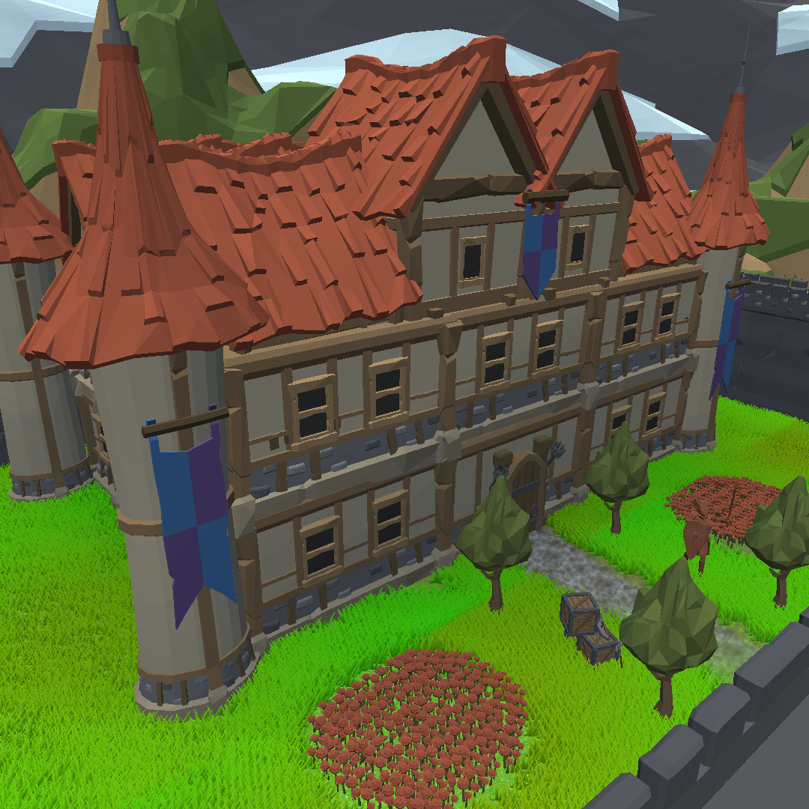
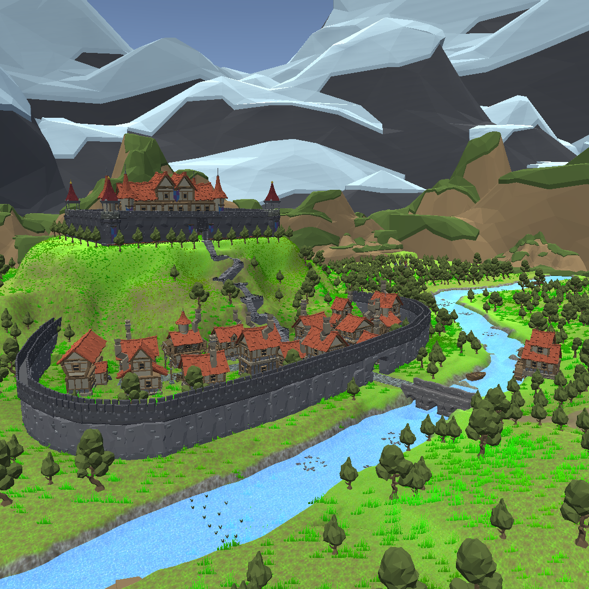
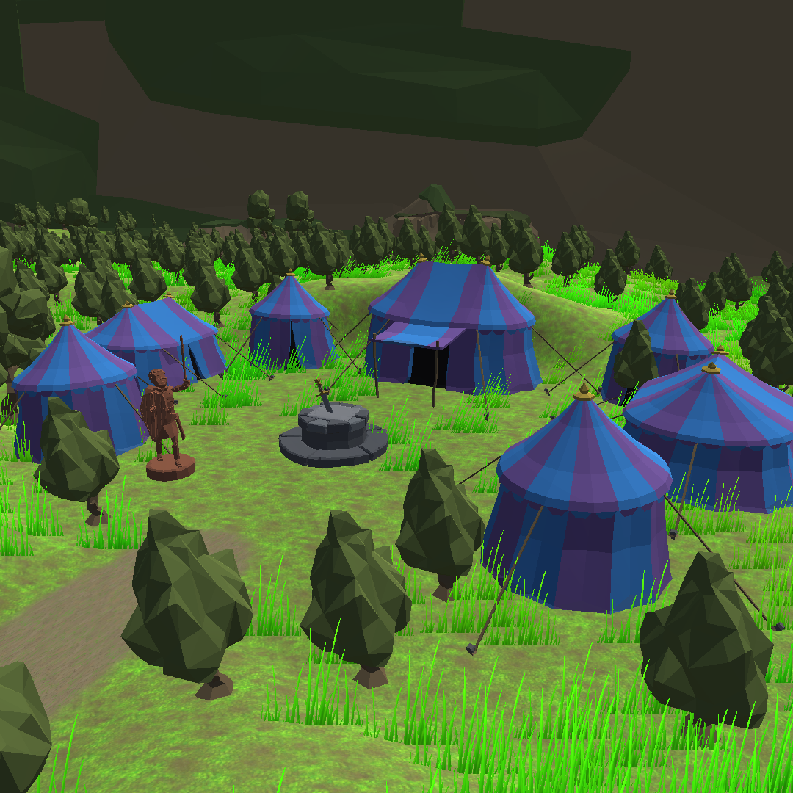
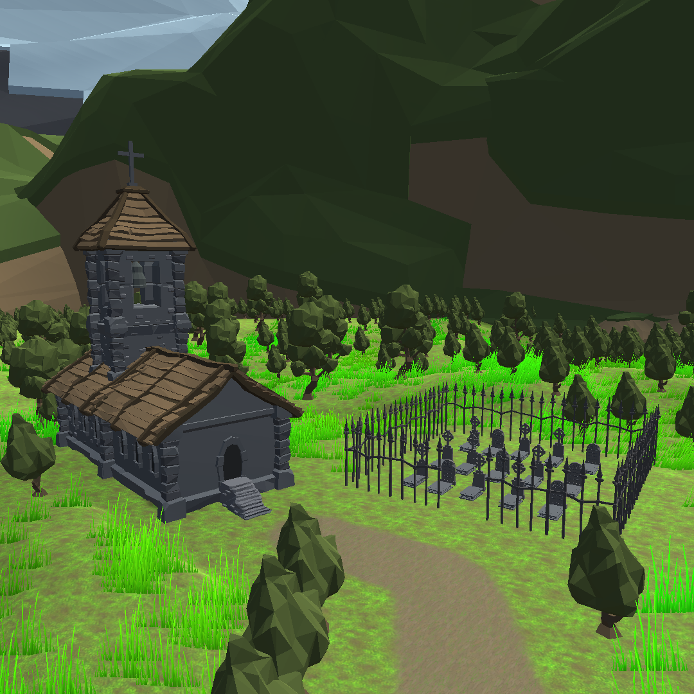
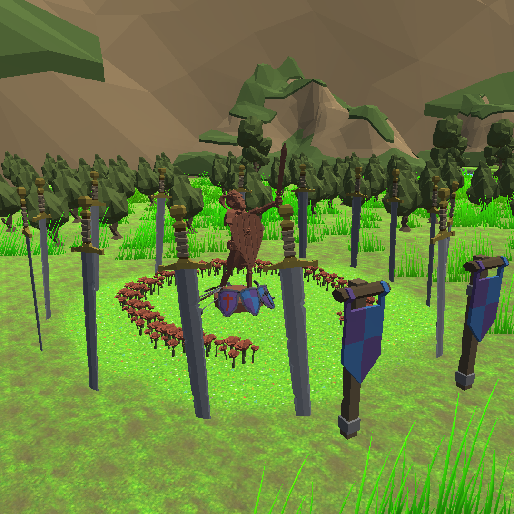

Level Design
Également passionné par les jeux vidéo, créer mon propre jeu vidéo faisait partie de mes rêves d'enfance.
C'est ce même intérêt qui m'a motivé dans ce projet.
Introduction
Au cours de ce projet, j'ai eu l'opportunité d'explorer l'un des aspects fascinants du domaine du jeu vidéo : le level design, une discipline consistant à élaborer la carte et l'environnement au sein desquels le joueur interagira avec son univers virtuel.
La carte
Les modèles
Le pack d'assets Polygon a été utilisé pour créer les modèles. À partir des sous-modèles qui existent, il m'a ainsi été possible de créer, en les assemblant, des modèles variés de maisons, de châteaux, de magasins, etc.
Le terraforming
Le terrain a été soigneusement pensé de manière à intégrer un relief spécifique en cohérence avec les infrastructures et le paysage. Par exemple, le manoir est positionné en altitude, surplombant le village situé en contrebas. Ce dernier s'étend sur un terrain plat, tandis que les zones naturelles présentent des reliefs doux et irréguliers, ajoutant ainsi une dimension réaliste et esthétique à l'environnement.
Les lieux clés
Le château
Perché au sommet de la colline, le château offre une vue panoramique saisissante sur l'ensemble du paysage.
Le château est agrémenté d'un jardin impeccablement entretenu, conférant ainsi une touche de prestige indéniable. Cet ensemble est judicieusement protégé par des murailles fortifiées, assurant une défense efficace en cas d'attaque et offrant un refuge sécurisé pour les habitants du village en contrebas.
Le village
Bordé par une rivière, le village constitue l'unique lieu de vie pour ses habitants.
À l'intérieur, plusieurs bâtiments tels que des maisons, une forge, une taverne, entre autres, ont été disposés de manière à former une petite ruelle qui traverse le village en ligne droite. Celui-ci est entouré d'une muraille dont l'entrée se trouve en face du château, assurant ainsi sa protection.
Le campement
 Le campement est situé dans un espace isolé, de l'autre côté de la rivière.
Au cœur du village, une épée est enfoncée dans la roche. La légende raconte que celui ou celle qui réussira à retirer l'épée aura le privilège de s'installer sur le trône du château.
L'eglise et le cimetière
 Une église et un cimetière qui offre un lieu de recueillement loin de l'agitation extérieure.
Il s'agit d'un lieu de rassemblement destiné aux habitants et à ceux qui cherchent l'isolement. L'église a été délibérément placée en retrait, au cœur de la forêt, afin de conférer au lieu une atmosphère plus mémorable.
La statue
 Une statue de chevalier pour honorer tous ceux tombés au combat.
Un lieu mémoriel isolé, inaccessible par un chemin, niché au cœur de la forêt. Protégé par des épées, cet endroit évoque le mystère et le courage des soldats.